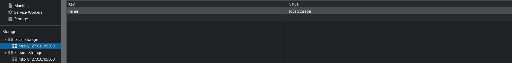
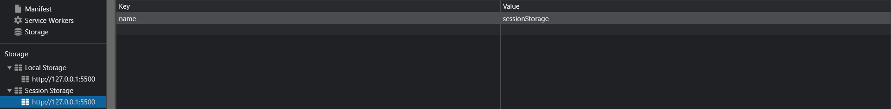
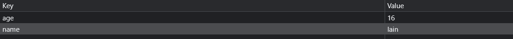

# 认识 Storage
- WebStorage 主要提供了一种机制，可以让浏览器提供一种比 cookie 更直观的 key、value 存储方式：
localStorage.setItem("name", "localStorage") | |
sessionStorage.setItem("name", "sessionStorage") |
- localStorage：本地存储，提供的是一种永久性的存储方法，在关闭掉网页重新打开时，存储的内容依然保留；

- sessionStorage：会话存储，提供的是本次会话的存储，在关闭掉会话时，存储的内容会被清除；

# localStorage 和 sessionStorage 的区别
- 我们会发现 localStorage 和 sessionStorage 看起来非常的相似。
- 那么它们有什么区别呢？
- 验证一：关闭网页后重新打开，localStorage 会保留，而 sessionStorage 会被删除；
- 验证二：在页面内实现跳转，localStorage 会保留，sessionStorage 也会保留；
- 验证三：在页面外实现跳转（打开新的网页），localStorage 会保留，sessionStorage 不会被保留；
# localStorage 常见的方法和属性
-
localStorage 有如下的属性和方法：
-
属性：
- localStorage.length：只读属性
- 返回一个整数，表示存储在 Storage 对象中的数据项数量；
- localStorage.length：只读属性
-
方法：
- localStorage.key ()：该方法接受一个数值 n 作为参数，返回存储中的第 n 个 key 名称；
- localStorage.getItem ()：该方法接受一个 key 作为参数，并且返回 key 对应的 value；
- localStorage.setItem ()：该方法接受一个 key 和 value，并且将会把 key 和 value 添加到存储中。
- 如果 key 存储，则更新其对应的值；
localStorage.setItem("name", "lain")
localStorage.setItem("age", 16)

// 1.localStorage.setItemlocalStorage.setItem("name", "lain")
localStorage.setItem("age", 16)
// 2.localStorage.lengthconsole.log(localStorage.length)
const key = []
const value = []
for (let i = 0; i < localStorage.length; i++) {
// 3.localStorage.key()key.push(localStorage.key(i))
// 4.localStorage.getItem()value.push(localStorage.getItem(key[i]))
}console.log(key) // ['age', 'name']
console.log(value) // ['16', 'lain']
-
localStorage.removeItem ()：该方法接受一个 key 作为参数，并把该 key 从存储中删除；
localStorage.removeItem("age") | |
console.log(localStorage.getItem("age")) // null |
- Storage.clear ()：该方法的作用是清空存储中的所有 key；
localStorage.clear() | |
console.log(localStorage.getItem("name")) // null |
# 封装 Storage
- 在开发中，为了让我们对 Storage 使用更加方便，我们可以对其进行一些封装
# 封装 Cache
class Cache{ | |
constructor(isLocal = true) { | |
this.storage = isLocal ? localStorage : sessionStorage | |
} | |
setItem(key, value) { | |
if(value) this.storage.setItem(key, JSON.stringify(value)) | |
} | |
getItem(key) { | |
let value = this.storage.getItem(key) | |
if (value) return value = JSON.parse(value) | |
} | |
removeItem(key) { | |
this.storage.removeItem(key) | |
} | |
clear() { | |
this.storage.clear() | |
} | |
key(index) { | |
return this.storage.key(index) | |
} | |
length() { | |
return this.storage.length | |
} | |
} |
# 测试 Cache
// setItem | |
localCache.setItem('name', 'lain') | |
localCache.setItem('age', '16') | |
// getItem | |
console.log(localCache.getItem('name')) | |
console.log(localCache.getItem('age')) | |
// length | |
console.log(localCache.length()) // 2 | |
// key | |
console.log(localCache.key(0)) // age | |
// removeItem | |
localCache.removeItem('name') | |
// length | |
console.log(localCache.length()) // 1 | |
// clear | |
localCache.clear() | |
console.log(localCache.length()) // 0 |